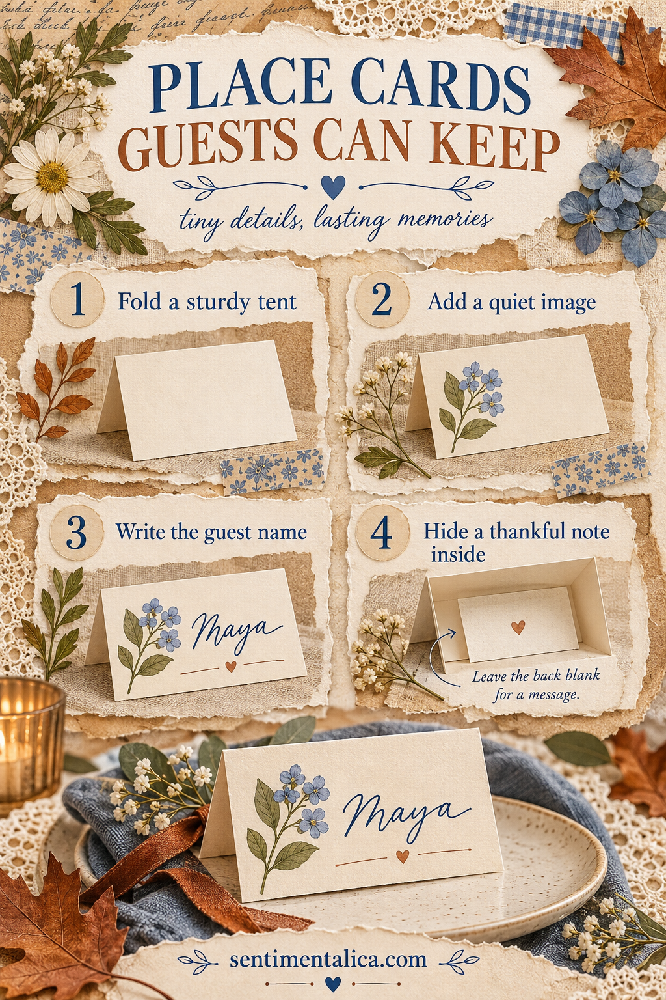
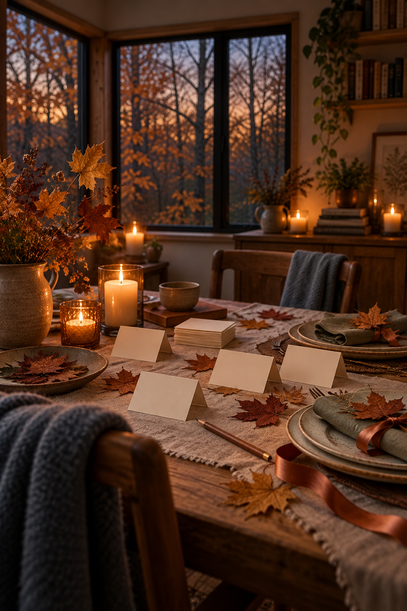

A place card can do two jobs. It helps everyone find a seat, then becomes a small note worth taking home. The difference is a message hidden inside the fold: something specific you appreciate about that guest, written where only they will see it.
Make the cards a few days ahead. The construction is simple, but the personal sentences deserve unhurried time.
Cut and fold a steady tent
Cut a strip of medium-weight cardstock about 10 × 15 cm. Score across the middle of the long side and fold it into a tent, so the finished card stands about 10 × 7.5 cm. Adjust the size to your table and handwriting.
If the card leans or collapses, use firmer paper or reduce its height. Test one prototype beside a plate before making the full set. A card that looks lovely flat may disappear behind a glass when placed on the table.
Keep the front easy to read
Write the guest’s name in dark ink near the center. Leave enough clear paper around the letters that the name is legible from a seat away. Add only one quiet image: a leaf, a tiny botanical, a narrow colored strip or a piece of printed paper.
Avoid large raised embellishments. They can make the card fall forward or snag on a napkin. A small flat image is more useful here than a complex collage.
Hide the thankful note
Open the tent and write one or two sentences on the inside. Try “I loved how you…” or “One thing I remember from this year…” The note does not have to sound ceremonial. An ordinary, accurate observation is kinder than a grand sentence copied for every guest.
If you are making many cards, jot one detail about each person on a private list first. Then write the cards individually so names and notes cannot be mixed up.

Make the set feel connected, not identical
Use the same cardstock and ink on every card. Change the tiny image or accent color from card to card. This keeps the table coordinated while letting each guest’s card feel personal.
A useful palette is ivory, copper, olive and a little dusty blue. If the tablecloth or napkins are already patterned, reduce the card decoration to a single leaf shape.
Place each card just above the plate or across a folded napkin. Keep it away from candle flames and serving dishes. After the meal, tell guests there is a message inside and invite them to take the card home.

An optional illustrated detail
Pressed leaves or hand-drawn marks are enough. If you prefer watercolor imagery, the live Autumn Leaves collection offers an autumn woodland direction. Browse the listing and select a small, suitable image rather than covering the entire card; check its current contents and terms before printing.
The note inside is what turns a seating label into a keepsake. The person may forget the centerpiece, but they can take your words with them.